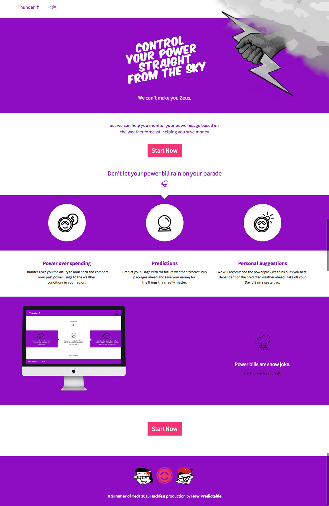

Thunder: 48 Hour Student Hackfest Project
"Thunder" is a responsive web app, developed as part of the Wellington Summer of Tech 2015 Hackfest — a 2-day New Zealand API and data visualisation challenge for 5-person teams of student developers and designers.
We created "Thunder" as a tool for reviewing, predicting and controlling your bills by recognising the patterns in weather-related power usage. Our aim was to help users track their previous spending, compare usage spikes to local temperatures and suggest power pack upgrades well before the extreme weather hits for maximum savings! We chose Powershop as our inspiration for this app because of their awesome homegrown electricity usage API and fun brand!
Home View v0.8: Our first wireframe for the home page included lots of pop-culture references.
Our Users:
Full-time worker and father, Peter, has a real pain when it comes to looking at his power bill. He frequently notices spikes in his power usage, but doesn’t know what’s contributing to them. He has a hunch that these spikes might be related to the weather in his city, but has no way of visualising the different data sets to know for sure. He’d love to be able to go back through a month’s use of power and check the spikes against historical weather data.
What Peter doesn’t know, is that a few suburbs away, uni student Brad, who shares a flat with 5 other students, is struggling with his power bill too. But Brad, unlike Peter, doesn’t have any idea where his usage spikes are coming from. Brad isn’t sure what he can do to get his bills under control, but we think we can help!
Our Testing:
To cater to our 2 users, we created a series of wireframes on the first day of the challenge and tested them with our peers. The wireframes included color-coded Calls to Action, paper buttons and changing screens. After testing the app with real people, we found out that the onboarding journey for our 2 primary users would be different and re-designed the app accordingly.
Dashboard Wireframe: our user-testing revealed a need for better labelling and a clearer user journey.

Our front-end development process had a few challenges along the way — for example, we had to position a graphic over the top of the navigation bar and the header on the home page. A bit of CSS trickery and some (metaphorical) elbow grease was just what the doctor ordered!
Dashboard View: The final version. PLEASE NOTE: The account and billing information, power pack names, descriptions and prices are completely fictional and don't reflect actual Powershop products or customers.
Our data sets were visualised using Chart.js. We struggled a little with making the canvas element responsive, but solved the problem in the end with some Javascript. The power pack suggestions below the data visualisation were mixed with some good old fashioned advice for keeping warm!
Disclaimer: "Thunder" was a student project and is not available for public use. It is not an official Powershop product or feature, it is only an experimental hackfest project that uses the Powershop API. Powershop did not commission or endorse this project and are not responsible for the app, its content or functionality in any way. That said, the Powershop team offered us amazing help with using their API during the Hackfest event and we are really grateful to the team for their great advice!
I hope you enjoyed having a look at our project. Get in touch if you have any feedback or to show your appreciation for 48-hour web-dev sprints!